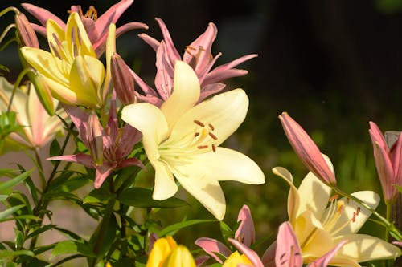

LÍRIO

O que é?
O Lírio é uma das flores mais antigas e simbólicas do mundo. Conhecido por sua brancura impecável e perfume intenso, ele representa a pureza e a renovação. Suas pétalas majestosas em formato de estrela fazem dele uma peça central em jardins sofisticados e arranjos cerimoniais.
Como cuidar?
Os lírios parecem delicados, mas com os cuidados certos, eles duram muito:
- Luz: Eles gostam de luz solar nas flores, mas preferem que a base da planta (as raízes) fique protegida do calor excessivo.
- Solo: Deve ser leve, muito bem drenado e rico em matéria orgânica. Eles não suportam solos encharcados.
- Rega: Mantenha o solo sempre úmido, mas evite molhar as pétalas e as folhas para prevenir o surgimento de fungos.
- Nutrição: Usar um fertilizante rico em fósforo ajuda a manter a floração vigorosa durante as estações quentes.
Curiosidades
- Perfume Noturno: O cheiro dos lírios costuma ficar ainda mais forte e doce durante o período da noite.
- História: Civilizações antigas, como os gregos e egípcios, consideravam o lírio uma flor divina e sagrada.
- Atenção com Pets: É importante saber que os lírios são tóxicos para gatos, por isso devem ficar em locais altos ou protegidos.
- Variedades: Existem mais de 100 espécies de lírios, mas o branco clássico continua sendo o favorito para representar a paz.